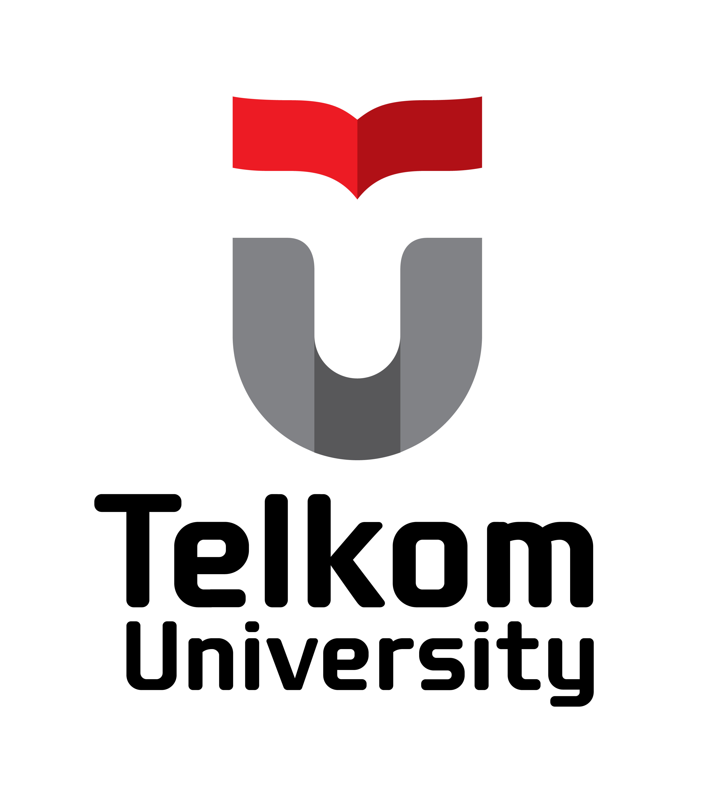

|

SISTEM
INFORMASI
Telkom University
Surabaya
|
|
Admisi |
Excellent in Connecting SystemsSistem Informasi (SI) adalah kombinasi dari teknologi informasi dan aktivitas manusia yang menggunakan teknologi tersebut untuk mendukung operasi dan manajemen. Pelajari Lebih Lanjut |
| Project Manager | IS Engineer | Business & System Analyst |
|---|---|---|
| Berperan untuk mengkoordinir dan mengelola sumber daya manusia di dalam pembangunan sistem informasi. | Berperan untuk mengembangkan sebuah perangkat lunak berupa aplikasi (web, game, desktop) dan didukung basis data yang berguna meningkatkan performa sebuah aplikasi. | Berperan melakukan review, analisis, dan mengevaluasi permasalahan bisnis, proses bisnis, fungsi, struktur organisasi, sistem informasi yang digunakan dan data dasar informasi. |
Sistem InformasiSitus resmi Program Studi Sistem Informasi Institut Teknologi Telkom Surabaya. Website ini diperuntukkan sebagai media komunikasi internal & eksternal bagi mahasiswa, dosen, dan karyawan. Program Studi Sistem Informasi sudah ada sejak berdirinya Institut Teknologi Telkom Surabaya berdasarkan Keputusan Menteri Riset, Teknologi, dan Pendidikan Tinggi No. 733 / KPT / I / 2018. Website ini menyajikan informasi tentang Program Studi Sistem Informasi, profil, visi dan misi, struktur organisasi, akademik, kurikulum, dosen, penelitian dan pengabdian kepada masyarakat. |
Tautan Penting
Tautan Bermanfaat
|
Info Kontak
Media Sosial |
|
Copyright © 2022 Information Systems Build with ♥ by CODER Team |